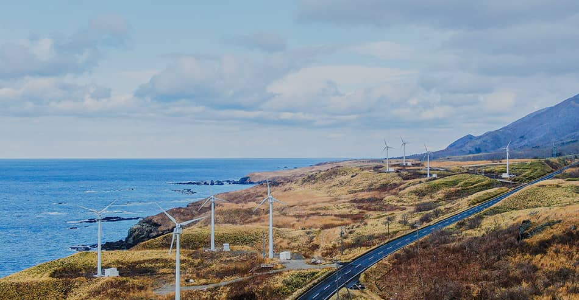
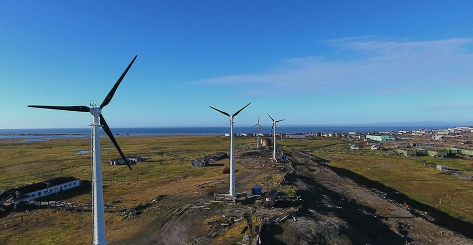
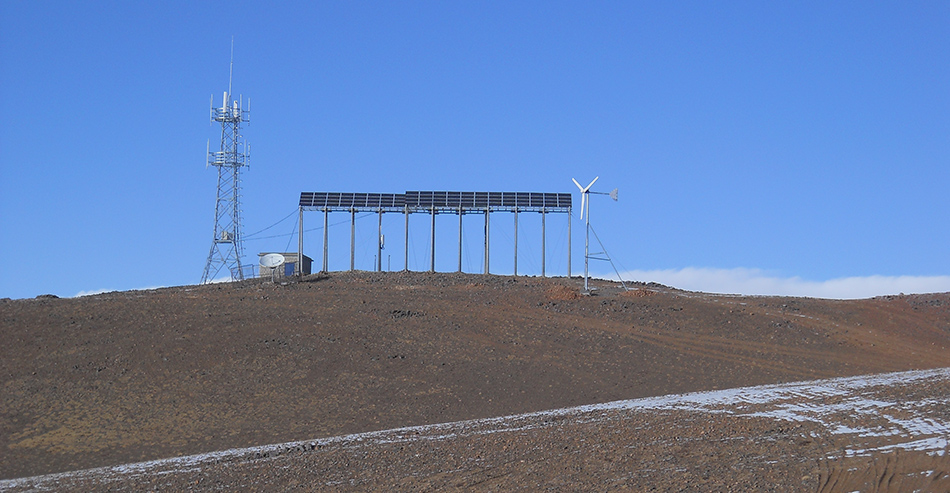
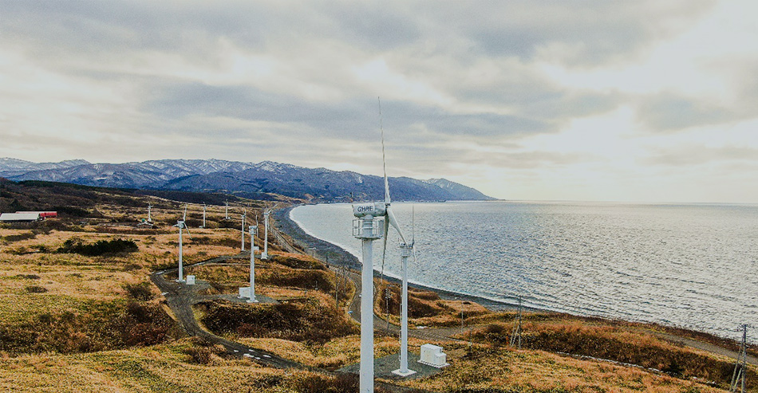
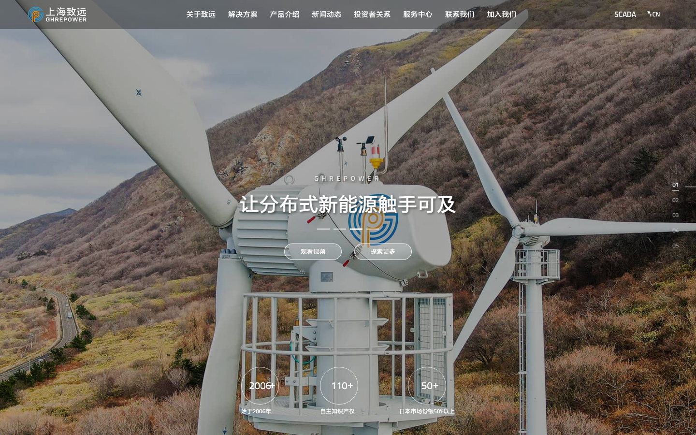
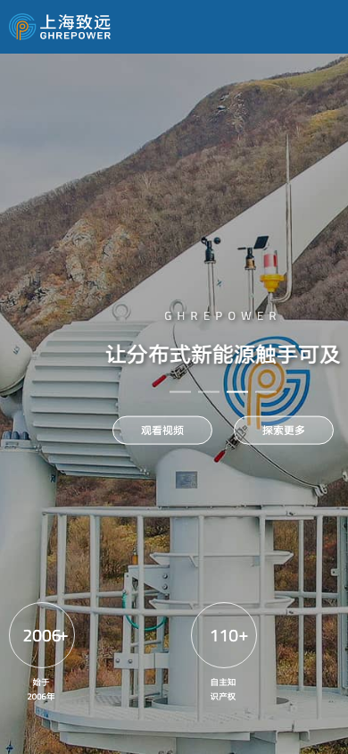

可再生能源 · 工业企业官网观察于 2026.08.23
画面来自原站公开首页，仅作内部研究与设计复盘。
01 / CASE SNAPSHOT
首页不是模块堆叠，
而是一条说服路径
原站把一个复杂的风电业务压缩进五个全屏场景。真正值得学习的是每一屏只完成一个沟通任务，并让下一屏自然回答用户刚产生的问题。
先给尺度
全幅风机场景、品牌主张和三组数字同时出现，在数秒内建立行业与企业体量感。
Hero / Brand scale再给选择
四象限解决方案围绕“分布式风电”中心展开，先按场景分流，而不是先讲参数。
Solution / User intent展示产品
七条产品系列像样本墙一样并列，悬停时背景换景，让型号与应用画面同步。
Product / Visual compare最后补证据
售前售后、公司入口和认证标识承接理性判断，把品牌印象落到服务和资质。
Trust / Proof02 / NARRATIVE SYSTEM
五幕不是五张海报，
是五个连续问题
点击左侧编号查看每一幕的任务。这个演示保留原站的章节感，但在移动端回退为自然滚动，不劫持鼠标滚轮。
SCENE 01 · HERO
先让用户感到“这是风电”
真实设备占据画面主体，品牌主张压在视觉中心，数字指标放在视线落点之后。行业识别、情绪和证据在一屏内分层完成。
- 一个画面只保留一个主判断
- 主标题使用 HTML，不烧进图片
- 用数字背书，但必须标明来源和时间
01 / 05
推荐实现
保留章节感，放弃滚轮劫持
桌面端可使用 scroll-snap 或视口内章节导航；移动端应保持自然文档流。自动切屏、键盘和触摸都不能成为读取内容的门槛，并为 prefers-reduced-motion 提供静态模式。
03 / SOLUTION MATRIX
用户先按场景找自己，
再进入产品参数
四象限不是装饰。它把“我有什么产品”翻译成“你要解决哪一类问题”，中心圆则持续提醒所有路径都属于同一个品牌能力。

01商业发电COMMERCIAL
02微电网MICROGRID
03离网 & 通讯OFF-GRID
04新能源投资INVESTMENT
可迁移条件
当 4–6 个解决方案共享同一底层能力，并且用户更习惯按应用场景而不是产品型号决策时，使用“中心能力 + 场景分支”。超过 6 项后应改用分类导航，避免中心图形挤压内容。
04 / PRODUCT SWITCHER
列表负责比较，
背景负责建立记忆
原站的产品条带在悬停时同步切换整屏背景。下面把这种模式改造成键盘、触摸和鼠标都能操作的产品选择器。
PRODUCT SERIES · 01
FD56 系列
将型号与真实应用图绑定，让用户先形成场景记忆，再进入功率、风轮直径和环境条件等可比较参数。
交互规则
hover 只做预览，click / focus 才是可靠状态；图片切换不能隐藏规格表和详情链接。
05 / RESPONSIVE EVIDENCE
同一视觉语言，
不能以内容丢失为代价
真实截图显示桌面首屏层级完整；手机首屏保留了冲击力，却压缩了第三组数字和部分说明。移动适配要重新编排信息，而不是只做缩放与裁切。


KEEP
值得保留
- 实体设备作为第一视觉锚点
- 一屏一个沟通任务
- 场景、产品、服务、认证顺序清晰
- 品牌蓝与能源橙形成稳定识别
REFINE
需要重构
- 不禁用浏览器缩放
- 不用滚轮劫持控制全部阅读
- 移动端不隐藏关键服务说明
- 清理旧依赖、HTTP 链接与脚本空节点错误
06 / AI INSTRUCTIONS
给 AI 的不是截图，
是可执行条件
以下规则可直接作为新项目设计前的检查表。它们描述“何时采用”和“如何约束”，不会把原站的品牌事实误当成通用模板。
强场景 Hero
当真实设备或项目现场能快速解释行业时，使用全幅场景图 + 一句价值主张 + 1–2 个动作；参数和资质保留在 HTML 内容中。
场景本身有证据价值
章节式叙事
按“品牌 → 方案 → 产品 → 服务 → 证据”组织首页，每一段只回答一个关键问题；章节导航只是辅助，不取代自然滚动。
业务解释链较长
场景先于型号
当用户并不熟悉型号体系时，先按商业发电、微电网、离网通讯等任务分流，再在详情页提供精确产品比较。
访客需求比型号稳定
换景式产品导航
用列表维持可比较性，用背景图加强记忆；点击、聚焦与键盘必须可切换，hover 不能成为唯一入口。
每个系列有明确应用图
数字必须可追溯
首页数字需要统计口径、时间和来源。没有第三方证据时写成“企业自述”，AI 不得为新客户生成相似数字。
使用市场、专利或规模指标
07 / SOURCE ARCHIVE
可复核的来源，
比灵感描述更有用
案例保留观察时读取的首页 HTML、核心 CSS/JS、原站截图和代表性图片。完整来源映射见 manifest.md。